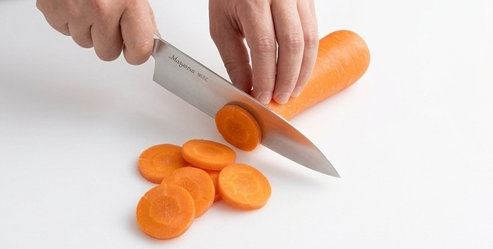
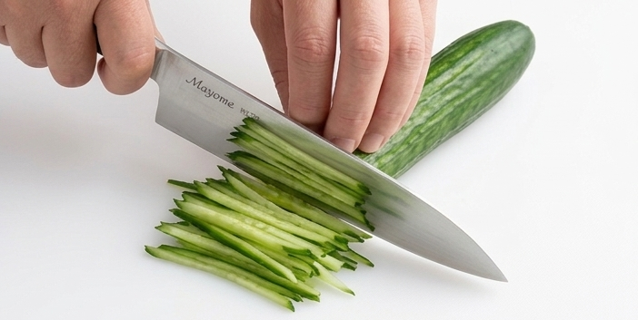
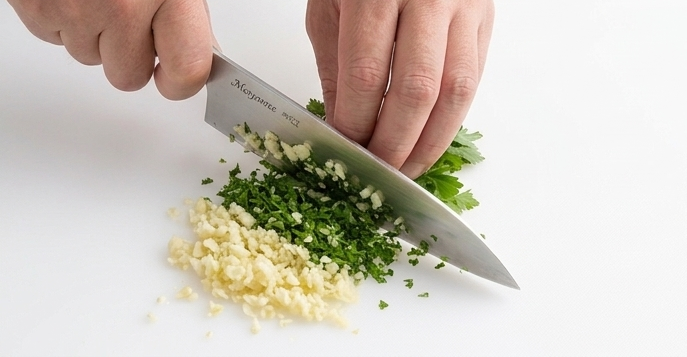
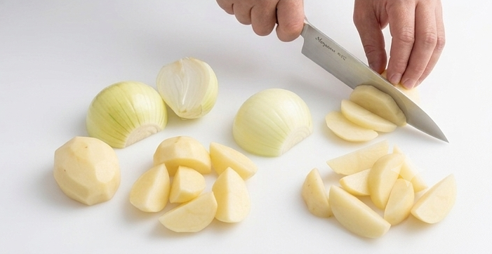

Basic vegetable cuts guide

Round Slice
This method involves cutting cylindrical vegetables horizontally into even, coin-shaped slices.
Best for:Tomatoes, cucumbers, daikon radish, carrots, eggplants
How to cut:
- Place the vegetable horizontally on the cutting board.
- Slice straight down from one end, keeping a consistent thickness (e.g., 3mm to 1cm depending on the recipe).
Pro Tip:Keeping the thickness uniform ensures that the food looks beautiful and cooks evenly.

Strips & Julienne
This technique is used to cut vegetables like bell peppers or carrots into long, thin strips.
Best for:Bell peppers, carrots, daikon radish, cabbage
How to cut(for Bell Peppers):
- Cut the pepper in half lengthwise and remove the stem and seeds.
- Slice lengthwise along the grain into thin strips about 2 to 3mm wide.
Pro Tip:Cutting along the grain keeps the vegetable crunchy. If you cut across the grain (horizontally), it becomes softer and releases flavor/bitterness more easily. Choose your direction based on the dish!

Mincing
This means chopping vegetables into extremely small pieces. It is usually used for bases of sauces or to blend ingredients seamlessly into a dish.
Best for:Garlic, onions, ginger, carrots
How to cut:
- Cut the clove lengthwise, remove the core (germ), and lightly crush it with the flat side of your knife.
- Make several vertical cuts into the clove, then chop across from the end.
- Gather the pieces and rock the knife back and forth (holding the tip down with your non-dominant hand) until it is finely minced.
Pro Tip:Aromatics like garlic and onions release more aroma and flavor the more finely they are chopped.

Random / Wedge Cut
This is a technique for long vegetables where you cut them into irregular, bite-sized chunks while keeping the overall size uniform.
Best for:Carrots, burdock root (gobo), daikon radish, eggplants
How to cut:
- Make a diagonal cut at one end of the vegetable.
- Roll the vegetable 90 degrees (a quarter turn) toward you, and make another diagonal cut.
- Repeat this process all the way through to create chunky, multi-faceted pieces.
Pro Tip:Rolling the vegetable creates a larger surface area on each piece. This allows the vegetable to absorb flavors much faster and cook more quickly, making it perfect for stews and curries.
Dry Weight & Liquid Volume
| Measure | Metric |
|---|---|
| 1 tsp | 5 mL |
| 1 Tbsp | 15 mL |
| 1 cup | 240 mL |
Safe Internal Meat Temperatures
| Food | ℃ |
|---|---|
| Chicken,Turkey & Duck | 74℃ |
| Ground Beef | 71℃ |
| Ground Pork | 71℃ |
| Beef Steak (Rare) | 50-52℃ |
| Beef Steak (Medium Rare) | 54-57℃ |
| Beef Steak (Medium) | 60-63℃ |
| Beef Steak (Medium Well) | 65-68℃ |
| Beef Steak (Well Done) | 71℃+ |
| Lamb (Medium Rare) | 57-60℃ |
| Fish | 63℃ |